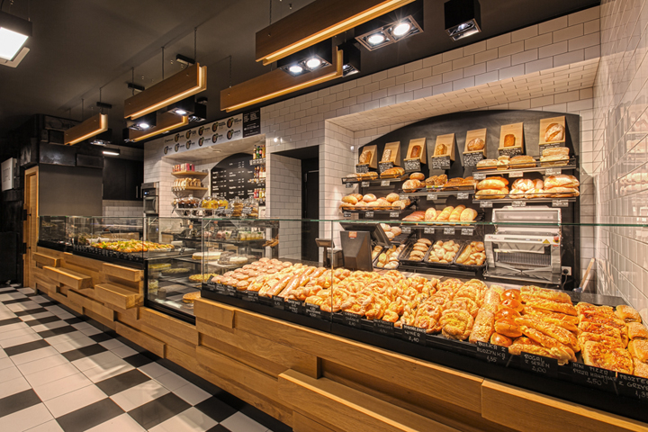
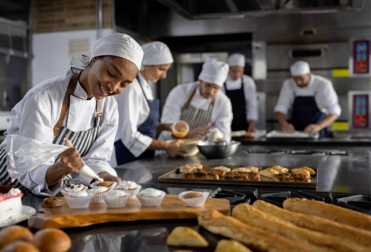
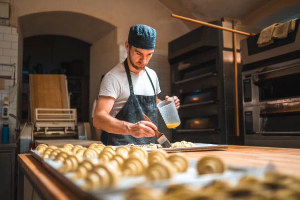
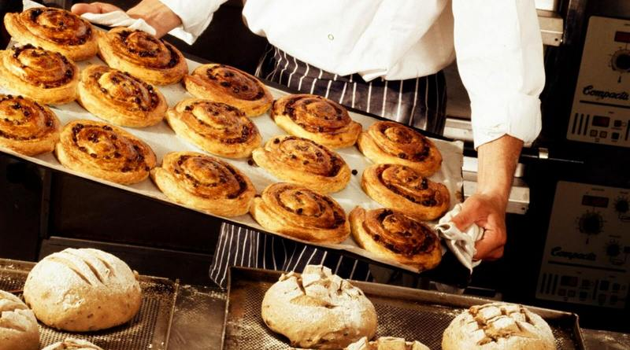

За организацията
Име и история
Пекарна „Златна Коричка“ е семейна пекарна, създадена през 2015 г. от семейство Иванови. Започваме като малка квартална работилница с една фурна и няколко вида хляб.
С годините разширяваме асортимента с домашни сладкиши, торти и специални празнични предложения. Днес „Златна Коричка“ е познато име в квартала и любимо място за пресен хляб и десерт „за вкъщи“.
Мисия
Нашата мисия е да предлагаме:
- Прясно изпечени изделия всеки ден;
- Честни и качествени съставки без излишни добавки;
- Топло и приятелско отношение към всеки клиент;
- Усещане за дом, когато прекрачите прага на пекарната.
Ценности
- Традиция: комбинираме стари рецепти с модерни техники.
- Местни продукти: работим с български брашна и фермерски продукти.
- Отговорност: ограничаваме хранителните отпадъци и даряваме част от продукцията.
Постижения
- 2017 г. – участие в фестивала „Хлябът ни събира“.
- 2019 г. – отличени като „Най-добра квартална пекарна“ (местно класиране).
- 2022 г. – въвеждаме линия от безглутенови и веган продукти.
- 2024 г. – разширение на пекарната с кът за кафе и десерти на място.
Партньори и клиенти
Работим с различни партньори в района на София:
- Малки квартални кафенета, които предлагат нашите кроасани и сладки;
- Офиси и компании, за които осигуряваме кетъринг за събития;
- Училища и детски центрове – закуски за ученици;
- Най-важните ни „партньори“ остават редовните клиенти от квартала.
Гордеем се, че много от нашите клиенти ни познават по име и избират „Златна Коричка“ за своята ежедневна трапеза и празници.



